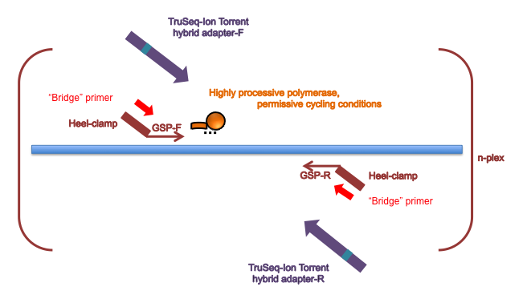
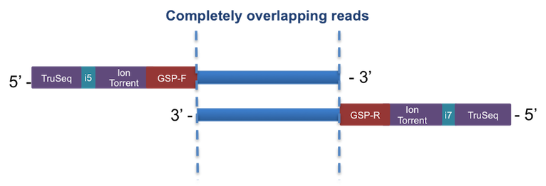

Hi-Plex chemistry employs:
- A small target size.
- A highly processive, high-fidelity polymerase.
- Permissive cycling conditions, spanning a gradient of annealing and extension temperatures at each cycle. This allows successful amplification across a range of primers and amplicon sequence contexts with different GC content.
With Hi-Plex, the PCR reaction does not rely on priming from gene-specific primers, which are only used to seed the reaction. Hi-Plex primers include a 5’ heel which have adapter sequences to allow abridged universal adapter primers then full-length adapter primers added at later PCR cycles to drive the majority of the reaction. The adapters are hybrids containing 5’ Illumina TruSeq and 3’ Life Technologies Ion Torrent compatible sequences.
Hi-Plex chemistry

Overlapping reads
